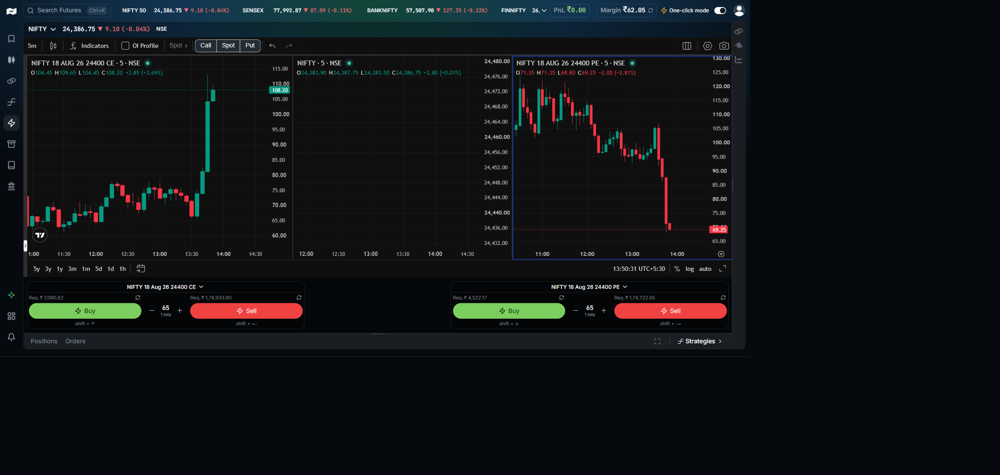
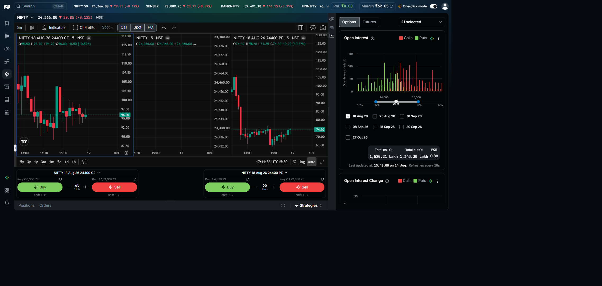
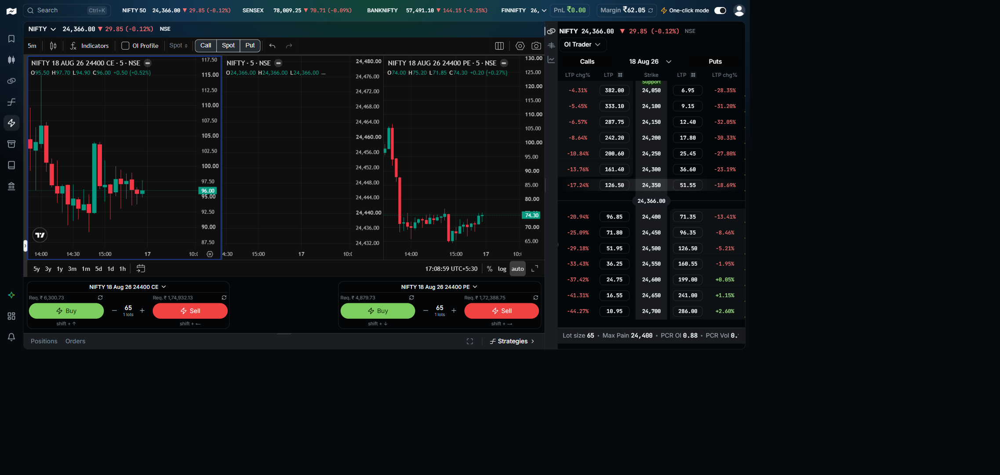

This is one of three standalone prototypes for the same idea: do the strategy once, the way you already do it, on the real Scalper screen, instead of filling condition forms. Adaptive stays silent through the whole recording and only speaks up for the one thing it genuinely could not infer. The other two timings, Batch and Inline, walk the same two tracks differently.
Watching the chart, or watching the option chain. This is the part that already happens on screen, every time.
A fuzzy call in your head: "that crossover looks real" or "OI just built up too fast on that strike."
You click buy, sell a leg, set a stop, or exit. The only part that leaves a trace today.
Recording captures the triple as it happens, on the real screen, not a builder canvas. The only job left for the cross-question step is turning the fuzzy DECIDE into a number, something the system can already do with the indicators and scanners it has.
EMA 9 over EMA 21 on the NIFTY 5 minute spot chart. Entry and exit both read off the same crossover.
OI builds up fast on both sides of the same strike. Read as a pin into expiry, sell the straddle.
Same recorder, same two tracks. This page is the Adaptive timing, silent unless stuck.

Default Scalper layout. Three panes, order tickets below. The one new element is the record control (toggle where it lives, above).
One click on the record control. Nothing else on screen changes yet.
Two options: mark up the chart, or capture the full screen as-is. Whatever happens next gets logged on the right, as it happens, not after.
This circle is the evidence: proof of what Aryan actually saw right before acting. It gets attached to this step, not thrown away.
The screenshot behind every step in this recorder is a real capture, exactly like this one, now attached as this step's evidence.
This is the CE pane's own strike picker, already part of the Scalper screen. 24400 is what's currently loaded.
24400 CE, Buy, confirmed. Every line on the right just now was logged the moment it happened, not reconstructed afterward.
Same panel, same step, nothing new opened. Title comes from the fixed list so categorization stays consistent; the description is free text. Saving collapses all of this into one line.
Two steps captured, entry and exit, in whatever order Aryan actually did them. Still nothing asked back, still quiet.
Everything is captured. Next: the one thing this session did not make clear, and nothing else.
Least friction. Stays silent through the whole recording and only speaks up for the one thing it genuinely could not infer from what you did.
"name": "EMA 9/21 Crossover, NIFTY", "instruments": ["NIFTY"], "chart": { "interval": "5m" }, "entry": { "side": "BUY", "conditions": { "logic": "AND", "items": [ { "lhs": {"type":"EMA","params":{"period":9}}, "op": "crosses_above", "rhs": {"type":"EMA","params":{"period":21}} } ]} }, "exit": { "mode": "both", "conditions": { "logic": "AND", "items": [ { "lhs": {"type":"EMA","params":{"period":9}}, "op": "crosses_below", "rhs": {"type":"EMA","params":{"period":21}} } ]}, "stop_loss_pct": 2 }, "execute": { "initial_capital": 100000, "holding_type": "intraday" }, "_source": "recorder_session_8f21c_adaptive"
Backtest runs automatically against Nubra's own historical data, before a deploy button ever appears. This is the trust moment.
We do not run a broker connection or an execution engine ourselves. We hand off a saved, backtested strategy and get out of the way at the point where Nubra Cloud already takes over.

Instead of the chart, Aryan watches the option chain: OI, LTP change, PCR. This is the shape of it, calls and puts by strike. The next step zooms into the exact rows.

One parent step, "OI pin forming," with the two leg fills nested under it, captured in whatever order the clicks actually happened.
One narration, attached to the parent step, covers both legs. Adaptive stays quiet here too, same as track A.
Same pattern as track A: silence, then one sharp question, aimed exactly at the gap.
"basket_name": "Sell ATM Straddle, OI Pin (NIFTY)", "trigger": { "watch": "option_chain", "underlying": "NIFTY", "condition": { "type": "OI_BUILD_UP", "params": { "strike": "ATM", "window": "5m", "min_oi_change_pct": 15, "sides": ["CE", "PE"] } } }, "legs": [ { "symbol": "NIFTY18AUG2624400CE", "side": "SELL", "qty": 65 }, { "symbol": "NIFTY18AUG2624400PE", "side": "SELL", "qty": 65 } ], "exit": { "type": "TIME_BASED", "params": { "exit_days_before_expiry": 2 } }, "_source": "recorder_session_c4a90_adaptive"
"OI just built up too fast" binds to a condition shape the option chain scanners already speak, the same family as the OI wall and IV expansion detectors. Recording never has to invent a new vocabulary.
Legs, price, and margin are re-checked against the live option chain before this ever reaches a deploy screen, the same way a manually built basket would be.
Screenshots are Nubra's live Scalper UI, captured 14 Aug 2026. Every recorder panel, strip, ring, and callout drawn on top is proposed for this prototype, not built.